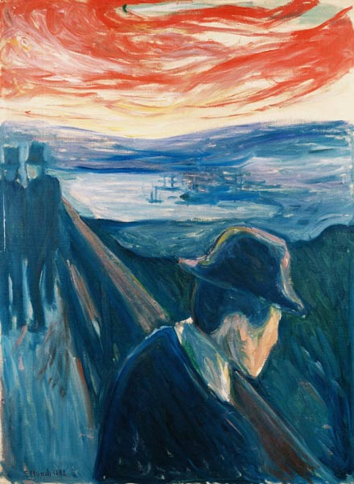
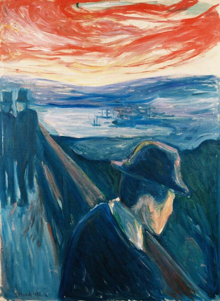

Edvard Munch
Edvard Munch è stato un pittore norvegese del XIX e XX secolo, noto soprattutto per il
suo dipinto iconico "Il grido". Nato nel 1863 a Loten, in Norvegia, Munch è stato uno dei
precursori dell'espressionismo, un movimento artistico che enfatizzava le emozioni e le
esperienze personali dell'artista.
La sua opera più famosa, "Il grido", rappresenta una figura agonizzante che tiene le mani
sulle orecchie, con uno sfondo distorto e claustrofobico. Quest'opera incarna il senso di
angoscia e alienazione che Munch ha spesso raffigurato nella sua arte.
La sua produzione artistica è stata fortemente influenzata dalla sua vita personale, segnata da tragedie
familiari e problemi di salute mentale.
Oltre a "Il grido", Munch ha creato numerose opere che esplorano temi simili di amore,
morte, gelosia e desiderio. La sua tecnica si caratterizzava per l'uso audace del colore
e delle linee sinuose, che contribuivano a creare un'atmosfera intensamente emotiva
e disturbante.
Nonostante la sua arte fosse spesso controversa e mal compresa durante la sua vita,
Munch è ora considerato uno dei più grandi artisti norvegesi e un'icona dell'arte moderna.
È deceduto nel 1944, lasciando un'impronta duratura nell'arte del XX secolo.

 

Homepage